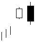

تحلیل تکنیکال
الگوهای کندل استیک ها
الگوهای برگشتی نزولی
Bearish Engulfing

این الگو (پوشاننده نزولی) شامل دو شمع با رنگ های متفاوت است که در انتهای روند صعودی تشکیل می شود. کل بدنه
مشکی (نزولی) شمع دوم، بدنه شمع اول سفید (صعودی) را پوشش می دهد. اندازه سایه ها در این دو کندل اهمیتی ندارد.
ایجاد شکاف (گپ) بین نقطه پایان کندل اول و نقطه آغاز کندل دوم اهمیت بیشتری به این الگو برای آغاز روند نزولی می
دهد.